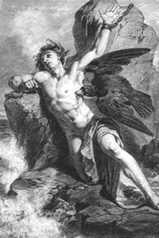
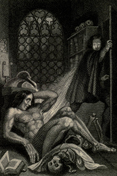

<div id="content">
  <div id="content-main" class="container clearfix">
    <div id="main-content" class="row">
      <div class="content">
        <div class="col-xs-12">
          <div id="carousel-home" class="carousel slide" data-ride="carousel"> 
            <!-- Indicators -->
            <ol class="carousel-indicators">
              <li data-target="#carousel-home" data-slide-to="0" class="active"></li>
              <li data-target="#carousel-home" data-slide-to="1"></li>
              <li data-target="#carousel-home" data-slide-to="2"></li>
              <li data-target="#carousel-home" data-slide-to="3"></li>
              <li data-target="#carousel-home" data-slide-to="4"></li>
              <li data-target="#carousel-home" data-slide-to="5"></li>
              <li data-target="#carousel-home" data-slide-to="6"></li>
            </ol>
            
            <!-- Wrapper for slides -->
            <div class="carousel-inner" role="listbox">
              <div class="item active"> 
                <div class="carousel-caption">Frankenstein - Draft Notebook A. c. 56, fol. 21r</div>
              </div>
              <div class="item"> 
                <div class="carousel-caption">Engraved Frontispiece to the revised edition of <em>Frankenstein</em></div>
              </div>
              <div class="item"> 
                <div class="carousel-caption">Percy Bysshe Shelley</div>
              </div>
              <div class="item"> 
                <div class="carousel-caption">William Godwin</div>
              </div>
              <div class="item"> 
                <div class="carousel-caption">Mary Wollstonecraft Shelley</div>
              </div>
              <div class="item"> 
                <div class="carousel-caption">Mary Wollstonecraft</div>
              </div>
            </div>
            
            <!-- Controls --> 
            <a class="left carousel-control" href="#carousel-home" role="button" data-slide="prev"> <span class="glyphicon glyphicon-chevron-left" aria-hidden="true"></span> <span class="sr-only">Previous</span> </a> <a class="right carousel-control" href="#carousel-home" role="button" data-slide="next"> <span class="glyphicon glyphicon-chevron-right" aria-hidden="true"></span> <span class="sr-only">Next</span> </a> </div>
            <div class="container gen-editors">
            <span>General Editors:</span> Neil Fraistat, Elizabeth Denlinger, and Raffaele Viglianti 
            </div>
        </div>
        <div class="col-sm-7 col-xs-12">
          <h2>About the Archive</h2>
          <div class="column-content">
            <p>The Shelley-Godwin Archive will provide the digitized manuscripts of Percy Bysshe Shelley, Mary Wollstonecraft Shelley, William Godwin, and Mary Wollstonecraft, bringing together online for the first time ever the widely dispersed handwritten legacy of this uniquely gifted <a href="about#firstfamily">family of writers</a>. The result of a partnership between the New York Public Library and the Maryland Institute for Technology in the Humanities, in cooperation with Oxford’s Bodleian Library, the S-GA also includes key contributions from the Huntington Library, the British Library, and the Houghton Library.  In total, these partner libraries contain over 90% of all known relevant manuscripts. The S-GA is published by <em>Romantic Circles</em>, a digital scholarly journal of Romantic studies.</p>
            <p><a href="/explore" type="button" class="btn btn-primary btn-lg explore-btn">EXPLORE THE ARCHIVE &nbsp;&nbsp;<i class="fa fa-search"></i></a> </p>
          </div>
        </div>
        <div class="col-sm-5 col-xs-12">
          <h3>Featured Works</h3>
          <div class="column-content row">
            <div class="col-sm-6 col-xs-4">
            <div class="feat-item">
              <a href="/contents/prometheus_unbound/"></a>
              <h4><a href="/contents/prometheus_unbound/"><em>Prometheus Unbound</em></a></h4>
             </div>
            </div>
            <div class="col-sm-6 col-xs-4">
            <div class="feat-item">
           	  <a href="/contents/frankenstein/"></a>
              <h4><a href="/contents/frankenstein/"><em>Frankenstein</em></a></h4>
             </div>
            </div>
          </div>
        </div>
        <div class="col-xs-12 get-started">
            <span>Not sure where to start?</span> Take a look at our “<a href="/using-the-archive">Using the Archive</a>” page or watch our brief <a href="/using-the-archive#intro-vid">introductory video</a>. 
        </div>
      </div>
    </div>
  </div>
</div>
